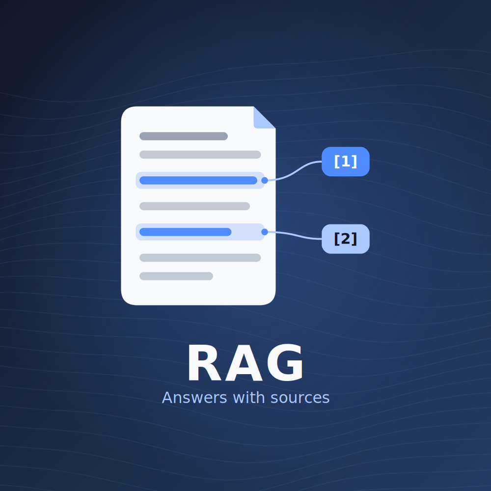
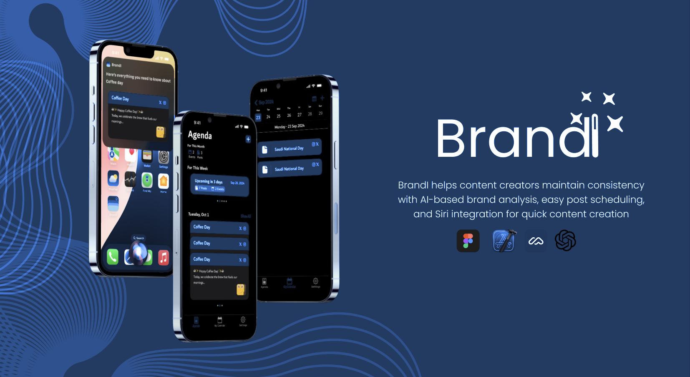
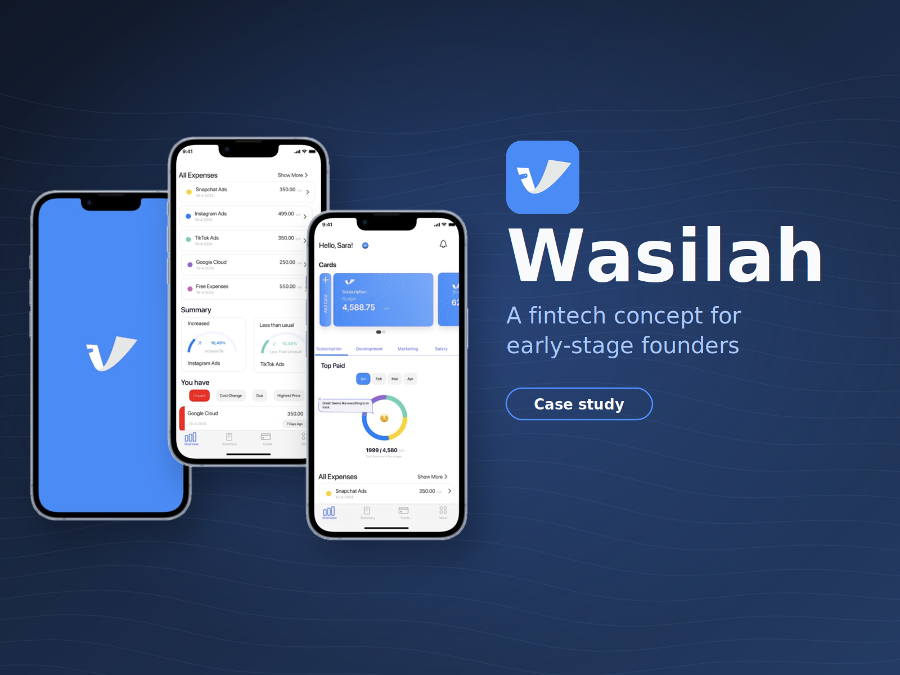
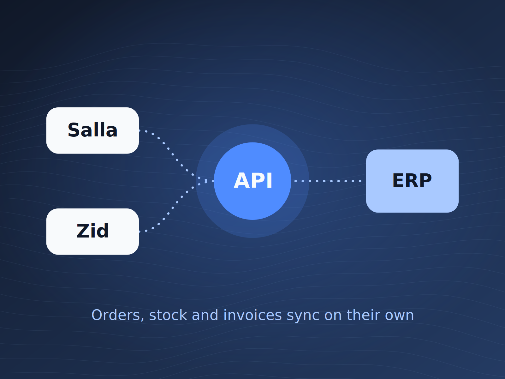
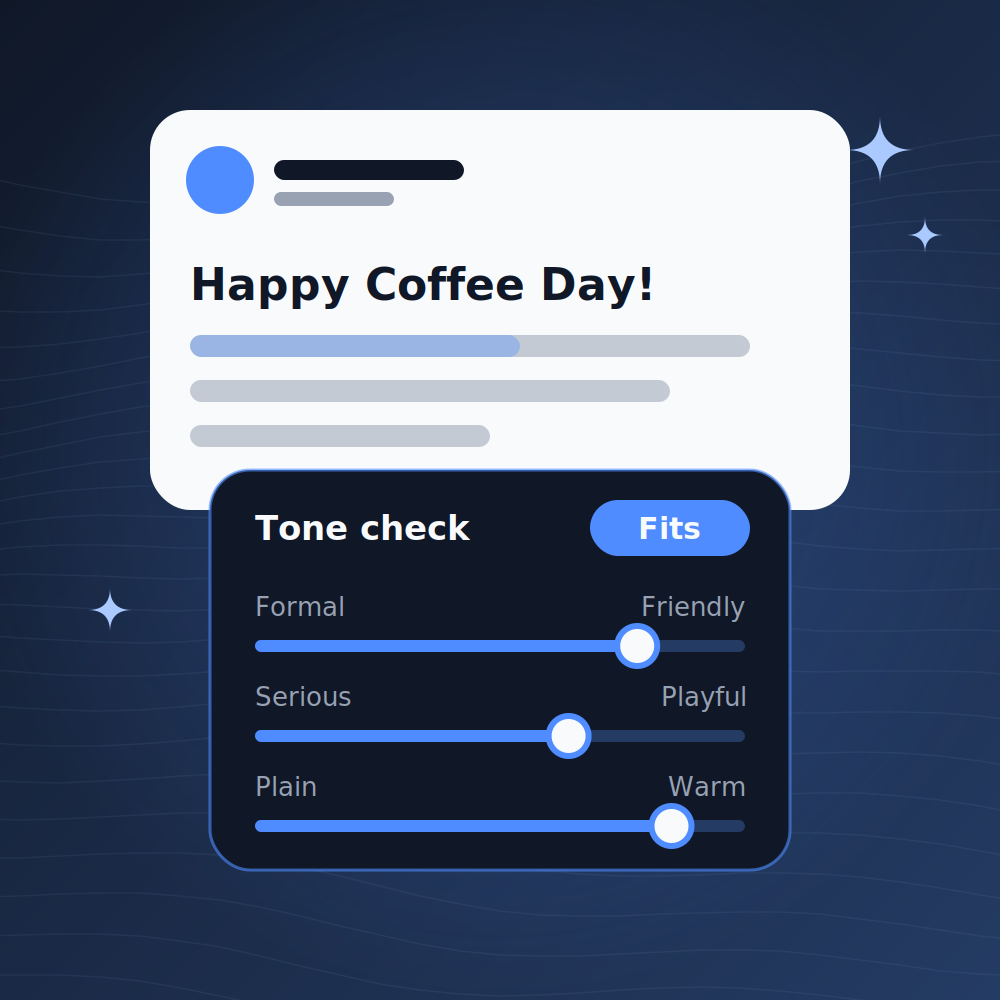
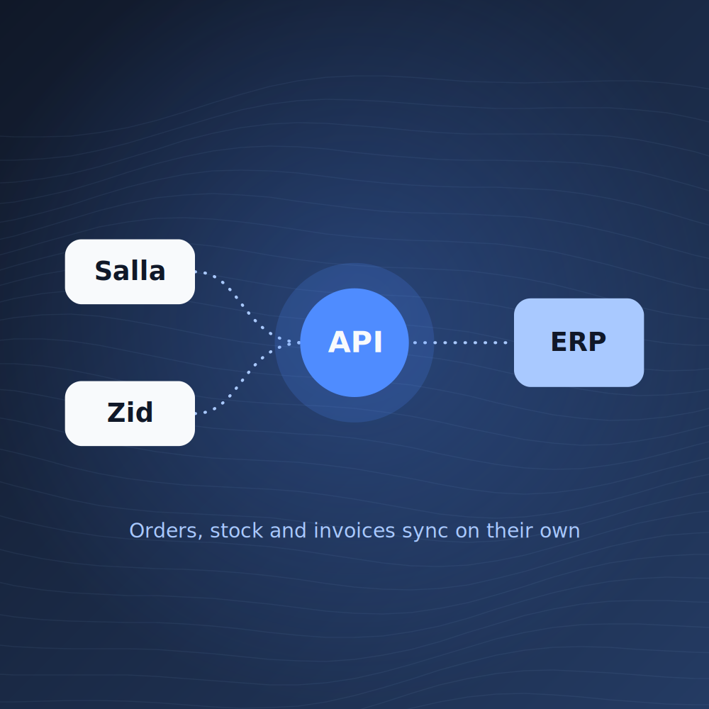
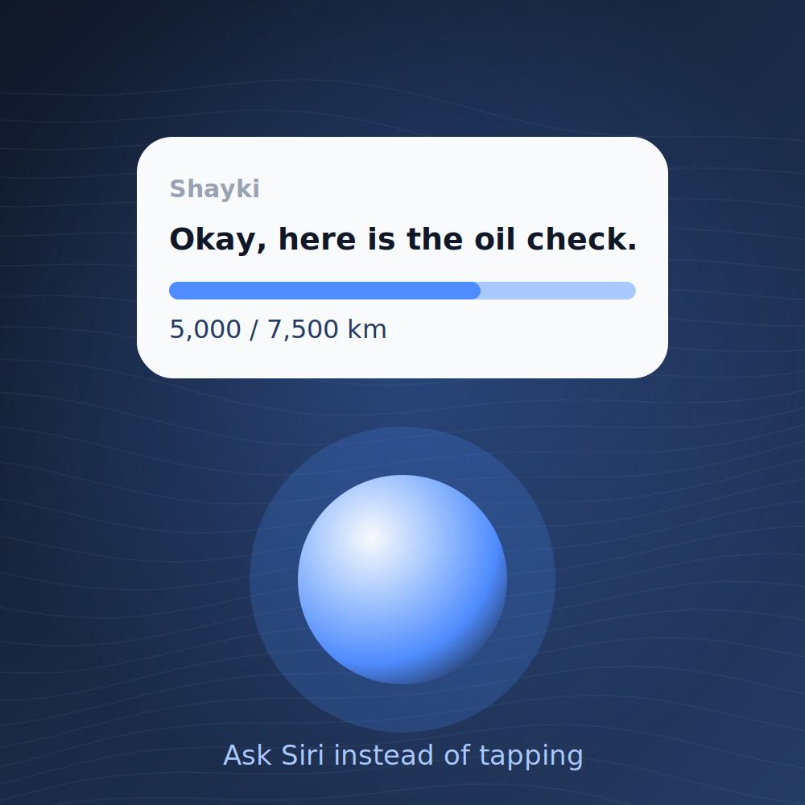
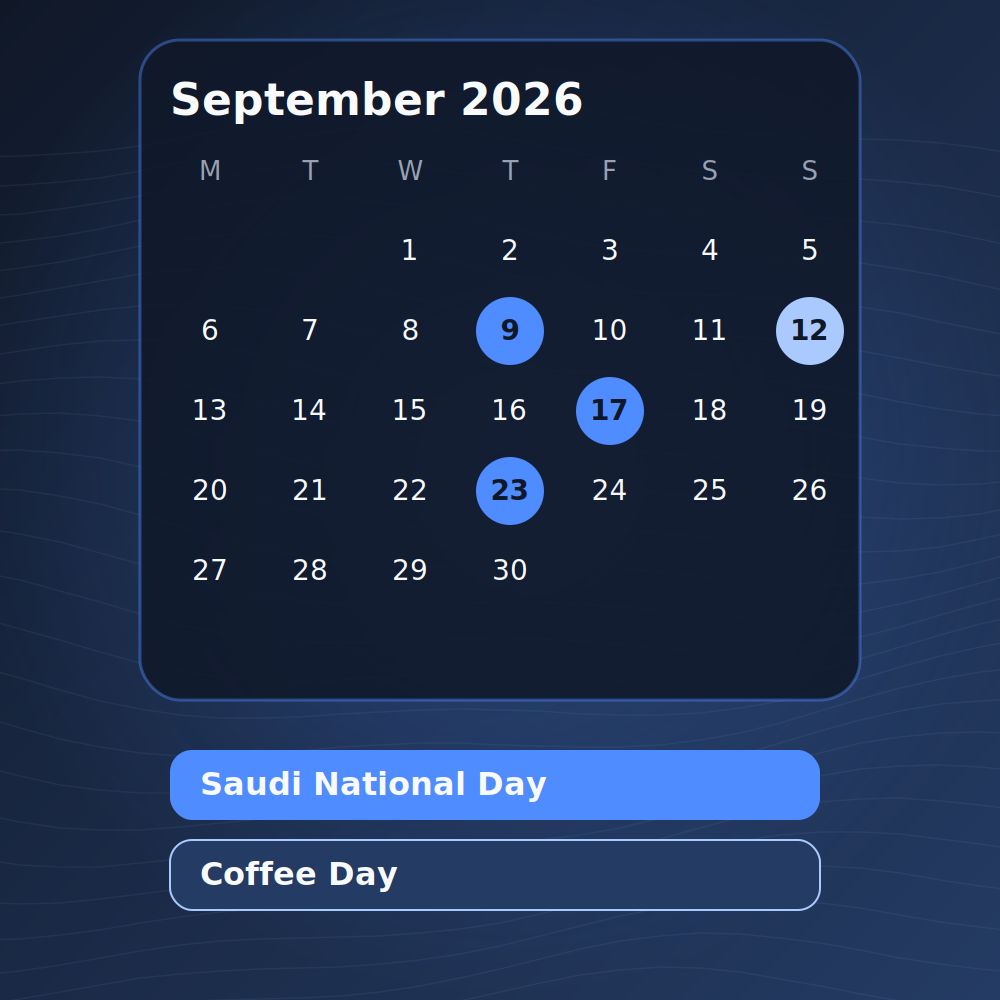

AI & Experiments
A document assistant that shows its sources
Ask a question, get an answer from your own files with the citations attached. It runs on local models.

I build digital products, connect systems, and explore what AI can make possible. I'm also a Business Analyst, I bridge business and technology, translating stakeholder needs and business challenges into clear requirements and practical digital solutions.
What I do
I turn ideas into working products.
From business problems to technical solutions.
From AI experiments to useful automation.
Less manual work. Better digital experiences.

An AI document assistant built with n8n, Ollama and Supabase. It retrieves answers from your files and shows its sources.

An AI-powered content strategy assistant that helps creators stay on brand.

A fintech product concept and business analysis case study for early-stage founders.

E-commerce integrations, API workflows and business process improvements across Salla and Zid.
Working examples, small experiments and notes along the way.
Ask a question, get an answer from your own files with the citations attached. It runs on local models.
Notes from the Wasilah research.
I began by asking how business owners could waste fewer products. My guesses: tracking shelf life by hand is hard, and products spoil when poorly organized. The interviews said no to both. Owners already had alerts, and products arrive categorized from the factory. What I did hear was overstocking caused by weak financial forecasting. That moved the whole project toward finance.

BrandI analyzes a brand's style and tone, then gives real-time feedback on whether a post fits.

API integrations that replaced manual data entry between e-commerce platforms and internal systems.
I did my degree in Learning Innovation and Information Technology at Rajamangala University of Technology Thanyaburi.

In Shayki you can say “Oil Check in Shayki” and get your oil status without opening the app.
Notes on narrowing focus.
Tools like Daftra and Qoyod serve many kinds of businesses, and that breadth overwhelms very small teams. Salla focuses on online stores and earned positive feedback in interviews. The lesson: tailor to one industry. So Wasilah narrowed to tech startups.
At Apple Developer Academy I built 8+ iOS apps with Swift and SwiftUI, owning each from first idea to delivery.

BrandI shows posts and events across platforms in one view.
I was chosen to continue into the second year at Apple Developer Academy.
A small redesign note.
Testing showed the Agenda screen was hard to scan. We improved color contrast, simplified how content is displayed, and grouped posts and events by date instead of showing one card at a time.
Nothing here yet.
I started with iOS apps, learned to listen to users as a UX researcher, and kept following the problem into AI and automation.
I studied in Thailand on a scholarship, spent two years at Apple Developer Academy, and have worked across product, backend and e-commerce systems.
What I like most is the gap between what a business says it needs and what a system can actually do. I work on that gap: interviews and prototypes on one side, APIs and workflows on the other.